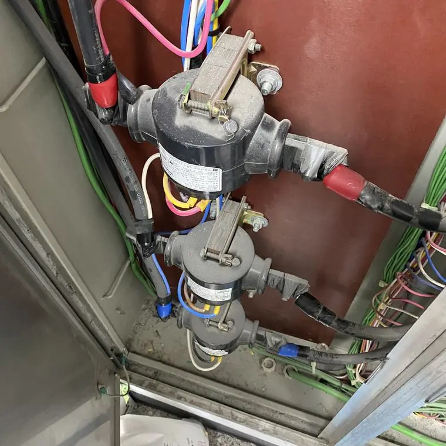
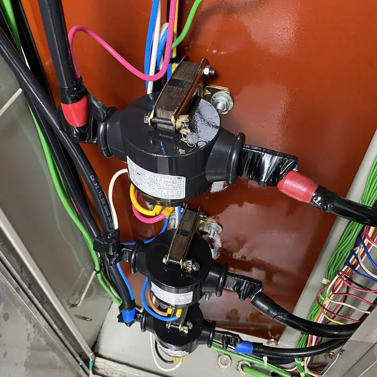

전기실 세척 전에 무엇을 준비하나요?
최종 수정 2026-11-09
설비 목록과 전압, 규모, 작업 가능 시간대, 사진, 전기안전관리자 협의를 준비하면 견적과 일정 조율이 빨라집니다. 작업 후에는 정상 동작 점검과 전후 사진 기록을 확인하세요.
시공 전에 준비할 것
- 세척할 설비 목록(수배전반, 변압기, 제어반, 분전함 등)과 면 수
- 설비 전압과 위치
- 전기안전관리자와의 사전 협의
- 작업 가능한 시간대(주간, 야간, 공휴일)와 출입 절차
- 주변 장비와 바닥 등 오염 방지가 필요한 영역
- 설비 전체와 내부 사진
작업 전

작업 후

현장에서 어떻게 보호하나요?
작업 전에 오염방지막과 부직포로 주변을 덮어 먼지 날림과 오염수 흐름을 막는 공정이 포함됩니다. 보호가 필요한 장비가 있다면 미리 알려 주세요.
작업 후 확인할 것
- 건조 후 장비가 정상 동작하는지 시험·점검 결과
- 작업 전후 사진 기록
- 필요한 경우 열화상이나 절연저항 비교 요청 여부
안전
전기설비를 직접 물이나 일반 세제로 청소하는 것은 감전·단락 위험이 있어 권하지 않습니다. 반드시 전문 업체와 전기안전관리자에게 먼저 확인하세요.
자주 묻는 질문
정전이 가능한 구역도 알려야 하나요?
네. 활선과 정전 작업 가능 여부는 일정과 작업 방식에 영향을 주므로 함께 알려 주세요.
작업 중 우리 쪽에서 할 일이 있나요?
출입 승인, 안전관리자 협의, 주변 장비 보호 안내 등을 사전에 조율합니다.
설비 사진과 정보를 남기시면 확인 후 견적을 안내해 드립니다.
무료 견적 문의하기이 글은 시공 업체가 공개한 자료와 일반적인 전기설비 관리 상식을 바탕으로 작성했습니다. 설비별 적용 여부와 결과는 현장 확인 후 달라질 수 있습니다.